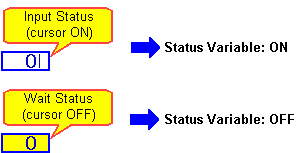

|
|
|
|
|
|
|
|
Click the Data Display icon on the Graphical Objects toolbar, and select Numeric Display or String Display from the list. This procedure uses Numeric Display as an example.
On the panel, click and draw the area where you want the data display.
The Numeric Display Settings dialog box opens.
In the General tab, specify the variable for numeric display and input.
In the Input Mode tab, select the Enable Input Mode check box. The Display Popup Keypad checkbox is also selected by default. Clear the Display Popup Keypad box to disable it.
In the Advanced tab, select the Input Status Variable check box, and specify a bool variable.
In the Status Mode list, select the Input Status Mode.
When you select this mode, the input status variable monitors the Data Display and when it's in the input state, the input status variable is ON. Otherwise, the variable is OFF. For more information, see Section 11.2.5, Advanced Tab.


You can use a similar setup for Value Animation; however, the status variable values are reversed. For Value Animation, the Input Status Variable is Off when the value-animated text object is in the input state.